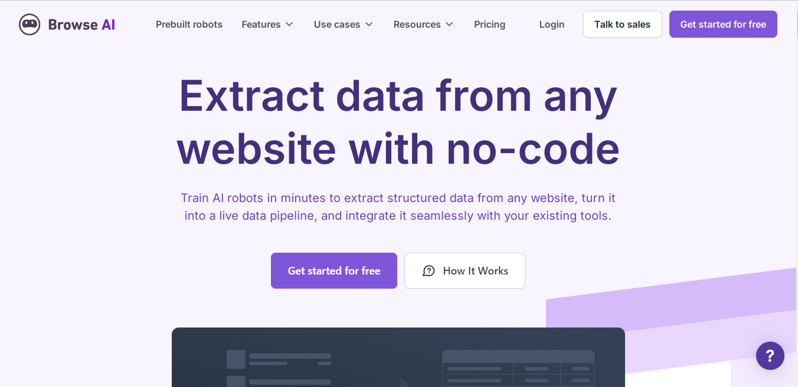
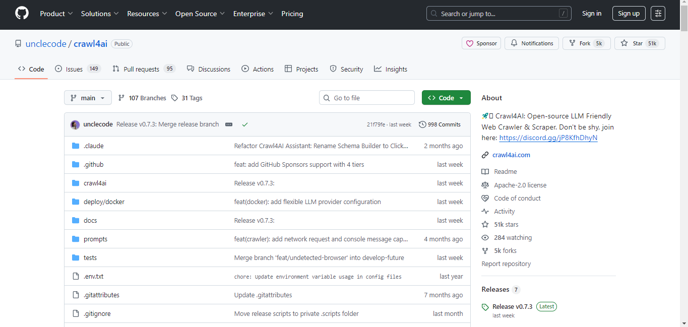
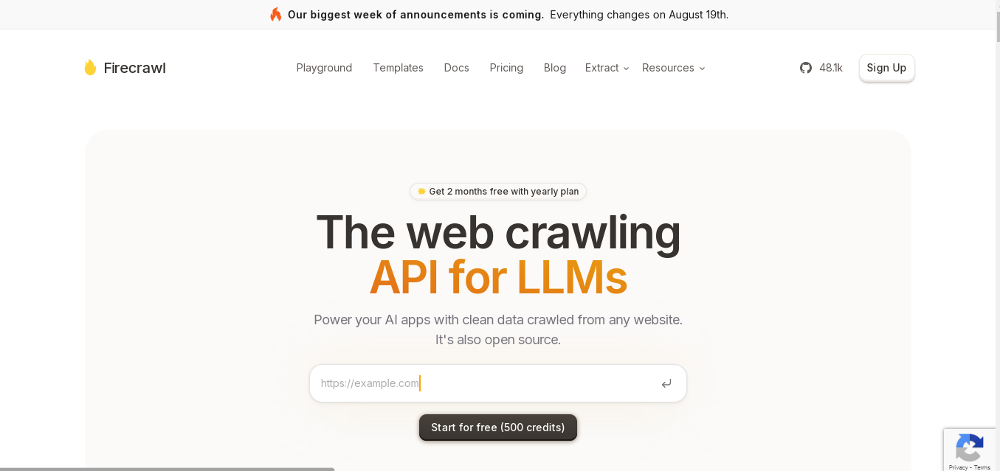
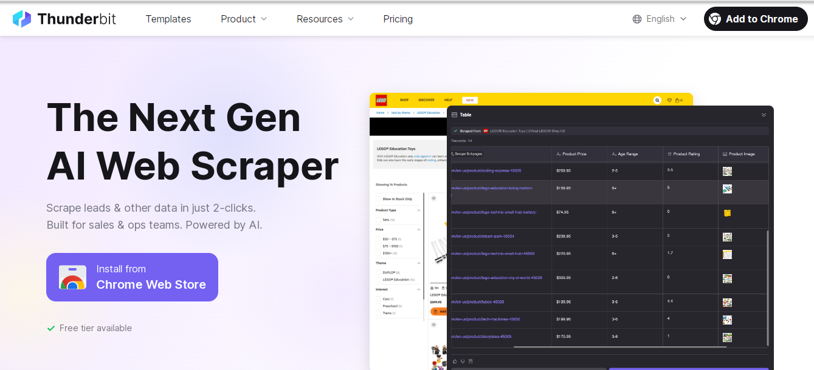

AI驅動的網絡爬蟲標誌着數據抓取技術的範式變革，它融合了機器學習、自然語言處理（NLP）和計算機視覺，以動態適應網頁結構、JavaScript渲染內容和反爬機製。與傳統基於靜態規則的爬蟲不同，智能爬蟲通過DOM樹分析、遷移學習實現的站點特異性解析，以及基於強化學習的代理輪換策略，能夠以更高精度處理大規模異構網絡數據。這類繫統尤其擅長處理動態加載內容、驗証碼繞過，並通過行爲模擬技術規避反爬蟲檢測。
1. Bright Data

Brightdata（亮數據）是提供AI驅動網頁抓取工具的頂尖公司之一，能有效減輕您的數據收集壓力。通過Bright Data的技術，您可以訪問專用端點，輕鬆從120個熱門域名中提取結構化網絡數據。
通過BrightData的解決方案，您可以選擇使用API或代碼抓取器進行抓取。更重要的是，您隻需爲成功交付的結果付費，並以您首選和選擇的格式獲取數據。藉助網頁抓取API，您可以輕鬆使用界麵構建API請求，構建調度程序以控製數據交付頻率，並輕鬆將數據交付和下載到您首選的存儲位置。另一方麵，對於無代碼抓取器，所有操作都在控製麵闆內完成，因此您可以輕鬆控製抓取器並通過控製麵闆下載數據結果。
您還可以享受定製標頭、驗証碼解決器、用戶代理輪換、自動IP輪換、JavaScript渲染等功能。此外，您可以通過Webhook或API交付獲取JSON、NDJSON或CSV格式的結構化數據。通過Brightdata，您還可以訪問來自195個以上國家的超過1.5億個真實用戶IP。您還可以選擇使用針對商業、金融、社交媒體、房地産等領域的定製API。
功能
價格方案
2. BrowseAI
BrowseAI 是另一個出色的網站，其無代碼界麵可創建能識別內容類型和網頁結構變化的爬蟲機器人。除此之外，它還支持 API 和 Webhook 自動化。您可以輕鬆訓練 AI 機器人從您選擇的網站提取結構化數據，並無縫集成到其他工具中。
使用 BrowseAI 更令人興奮的是，您甚至不需要任何技術經驗。這款 AI 驅動的網頁抓取工具可以輕鬆從數千個頁麵中提取相同的數據集，並將網絡數據轉化爲結構化數據集，方便您分析、導出或集成。
即使 AI 網頁抓取工具檢測到網站變化，您也可以設置監控以獲取元素變更通知。此外，您還可以輕鬆捕獲文本提取無法提供的視覺數據。理想情況下，您可以利用收集的數據訓練大語言模型（LLM）、機器學習（ML）或人工智能（AI）。同時，您沒有任何限製，可以收集用於競爭對手分析、市場情報等的數據。
它還支持高級技術功能，如自動重試、智能速率限製、代理管理和錯誤恢複，以確保數據提取的順暢。您還可以輕鬆通過各種參數（如蒐索詞、日期範圍或位置）定製您的數據提取。
功能
價格方案
3. Crawl4AI
Crawl4AI 是從論壇和博客提取網頁數據的理想工具。它使用大語言模型（LLM）動態解析網頁，從而有效降低維護成本。Crawl4AI 是一個 GitHub 開源項目，因此完全免費開放。
這是一款出色的AI驅動爬蟲工具，在數據提取方麵具有卓越的速度和準確性。您可以輕鬆從不同細分行業提取數據，滿足個性化使用需求。該工具對大語言模型非常友好，能提供結構化的文本、圖片和元數據，方便AI模型直接使用。其文檔提供了詳細的入門指南。
功能
價格方案
4. FireCrawl
Firecrawl 是另一個高效的AI網頁抓取平颱，支持深度爬取網站並以Markdown格式輸出，便於與大語言模型(LLM)無縫集成。它與LangChain也能完美配合。通過這個AI驅動的網頁抓取工具，您可以實時爬取網站所有頁麵並獲取所需數據。
您還可以輕鬆蒐索網絡，從任何行業獲取所需內容。Firecrawl已與現有主流工具和工作流程集成，確保您能輕鬆完成任務。其AI網頁抓取工具會等待內容加載完成，從而提昇抓取速度。
此外，您可以執行各種操作，比如滾動頁麵直到找到想要收集的內容。FireCrawl的設計能隨需求擴展，您可以根據當前需求和目標行業進行個性化設置。
功能
價格方案
5. Nimbleway

Nimbleway 是最優秀的代理服務提供商之一，同時提供AI驅動的網頁抓取工具。通過該工具，您可以輕鬆收集任何所需數據，無需擔心IP封鎖、地理限製或驗証碼問題。Nimble AI瀏覽器爲您提供全麵保護！
此外，通過簡單的REST API即可收集網頁數據，無需其他基礎設施來完成抓取任務。它會控製整個數據收集過程，您隻需髮送包含目標URL的API調用，所需數據就會直接髮送到您的雲存儲。輕鬆獲取電商、蒐索引擎結果頁(SERP)、社交媒體、旅遊等各類數據。
功能
價格方案
6. Zyte

Zyte 同樣提供AI驅動的網頁抓取工具，讓您輕鬆獲取所需數據。這款AI抓取工具能自動適應網站變化，確保您獲得流暢的使用體驗。
通過Zyte，您可以輕鬆實現點擊、輸入和滾動等自動化操作。獲取包括情感分析、數據對比和內容摘要等多種類型的內容。Zyte的AI抓取工具隻會抓取頁麵實際顯示的內容，確保更高的準確性。
此外，通過生成模式，您可以根據頁麵內容創建數據點。自動提取可通過瀏覽器請求或HTTP請求完成。
功能
價格方案
7. ScrapingBee

ScrapingBee 是另一個提供AI網頁抓取API的可靠平颱。您無需手動操作，AI驅動的抓取工具會自動完成任務。通過數據提取，您將獲得幹淨的JSON輸出，且抓取工具能自動適應頁麵變化。輕鬆抓取電商數據、提取郵件和聯繫信息、匯總和聚合新聞內容。
結合優質代理和先進的無頭瀏覽器技術，它能輕鬆繞過反爬蟲機製。隻需髮起API請求，您就能立即獲取所需數據。此外，它還提供截圖功能，不僅能獲取HTML還能獲取網站截圖。即使您沒有編程技能也完全不用擔心。
功能
價格方案
8. Thunderbit
Thunderbit 提供可靠的AI網頁抓取工具，讓數據收集變得簡單易用。擁有超過30,000名用戶的Thunderbit是一個值得信賴的平颱。您可以提取電子郵件、電話號碼、産品詳情、YouTube標籤、YouTube轉錄文本、AI銷售郵件生成、AI郵件標題生成、亞馬遜評論導出、TikTok話題標籤生成、亞馬遜産品、Instagram話題標籤生成、YouTube標籤等多種數據。
這款AI驅動的抓取工具能智能識別重要數據，並根據您的需求創建列名。它會自動過濾無關信息，讓您專注於關鍵數據。它能精準識別文件中的關鍵信息並進行提取。Thunderbit的界麵無需編程知識，您隻需定義列名，AI就能理解您要抓取的內容。
功能
價格方案
結尾
隨着互聯網向動態化和強反爬架構演進，AI爬蟲已成爲企業從非結構化數據源提取信息的關鍵工具。通過集成Transformer模型實現語義理解、聚類算法識別頁麵模闆，以及對抗訓練突破WAF防護，這些繫統不斷拓展自動化數據採集的邊界。但同時也需遵循爬蟲道德規範——包括速率限製、robots.txt協議合規性及法律框架，在技術創新與負責任的數據採集之間尋求平衡。